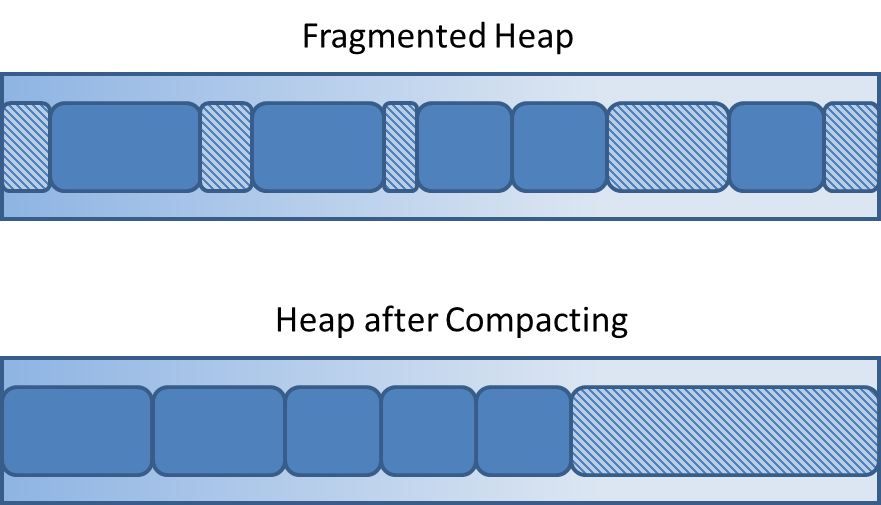

<!DOCTYPE HTML>
<html>
<head><meta name="generator" content="Hexo 3.9.0">
  <meta charset="utf-8">
  <meta http-equiv="X-UA-Compatible" content="IE=edge">
  <meta name="apple-mobile-web-app-capable" content="yes">
  <meta name="apple-mobile-web-app-status-bar-style" content="black">
  <meta name="google-site-verification" content>
  
  <title>我们为什么要写作？</title>
  <meta name="author" content="Emac">
   <meta name="description" content="为什么要写作？要回答这个问题，先来看看大咖们怎么说：

Paul Graham (YC创始人): I think it’s far more important to write well than most people realize. Writing doesn’t just communic">
  

  <meta property="og:title" content="我们为什么要写作？">
  <meta name="viewport" content="width=device-width, initial-scale=1, maximum-scale=1">
  <meta property="og:site_name" content="Emac">
 <meta property="og:image" content="undefined">
  
  <link href="/apple-touch-icon-precomposed.png" sizes="180x180" rel="apple-touch-icon-precomposed">
  <link rel="alternate" href="/atom.xml" title="Emac" type="application/atom+xml">
  <link rel="stylesheet" href="//cdn.bootcss.com/bootstrap/3.3.6/css/bootstrap.min.css">
  <link rel="stylesheet" href="//cdn.bootcss.com/font-awesome/4.5.0/css/font-awesome.min.css">
  <link rel="stylesheet" href="/css/m.min.css">
  <link rel="icon" type="image/x-icon" href="/favicon.ico">
</head>
</html>
<body>
  <div id='wx_pic' style='display:none;'></div>
  <div id="main">
    <div class="behind">
      <div class="back">
        <a href="/" class="black-color"><i class="fa fa-times" aria-hidden="true"></i></a>
      </div>
      <div class="description">
        &nbsp;拾贝
      </div>
    </div>
    <div class="container">
      

  <article class="standard post">
    <div class="title">
      
  
    <h1 class="page-title center">
        我们为什么要写作？
    </h1>
  


    </div>
    <div class="meta center">
      
<time datetime="2016-12-24T16:00:00.000Z">
  <i class="fa fa-calendar"></i>&nbsp;
  2016-12-25
</time>


    
    &nbsp;
    <i class="fa fa-tag"></i>&nbsp;
    <a href="/categories/notes/">notes</a>


    
    &nbsp;
    <i class="fa fa-tag"></i>&nbsp;
    <a href="/tags/原创/">原创</a>·<a href="/tags/写作/">写作</a>


    </div>
    <hr>
    <div class="picture-container">
      
    </div>
    <h2 id="为什么要写作？"><a href="#为什么要写作？" class="headerlink" title="为什么要写作？"></a>为什么要写作？</h2><p>要回答这个问题，先来看看大咖们怎么说：</p>
<blockquote>
<p>Paul Graham (YC创始人): I think it’s far more important to write well than most people realize. Writing doesn’t just communicate ideas; it generates them.</p>
<p>Steve Yegge (Google): It’s become pretty clear to me that blogging is a source of both innovation and clarity. I have many of my best ideas and insights while blogging. Struggling to express things that you’re thinking or feeling helps you understand them better.</p>
<p>Shubhro Saha (Facebook): Software engineers should write because it promotes many of the same skills required in programming. A core skill in both disciplines is an ability to think clearly. The best software engineers are great writers because their prose is as logical and elegant as their code.</p>
<p>王建硕（百姓网创始人）：我把写东西完全当作自己的一个旅程，不是为了说服任何人，也不是为了传递什么信息。最主要是为了自己。我发现只有能优美、简洁、准确的把一个想法表达出来，我才敢说自己思考过了。否则落笔时，才发现有些概念依然模糊，或者答案还没有浮出水面。不写出来，自己就会浑然不知。</p>
<p>鬼脚七（前淘宝搜索负责人）：我知道一点，在我写文章的时候我很快乐，那是一种宁静的快乐。我每天睡觉经常只有6个来小时，白天我很忙碌，一直忙碌到晚上，但夜深人静时，就是我的欢乐时光。我每天很期待这一刻的到来，就像现在。</p>
<p>Fenny（前丁香园CTO）：在写公众号之前，我已经写过近十年的博客，六年的推特，三四年的微博，可以说几乎每天都在用键盘写东西，但无奈天分有限，也未受过严格训练，写的并不好。偶有寸进，心下会暗自窃喜。写作让我思想更为自由，感谢写作带给我的愉悦。</p>
<p>Roy Li（黑客，连续创业者）：就连我自己阅读的时候也像池院长所说的：自己看了都有收获。这便是写作的魅力，多尝试不同的角度思考和写作，对自身成长的帮助是不可估量的。</p>
</blockquote>
<p>就像一千个人眼里有一千个哈姆雷特，一千个人心中有一千个写作的理由。但有一点我相信是共通的，那就是有关自我成长。表面上看写作的对象是别人，但真实情况是，你是你自己最忠实的读者。你写的每一篇文章，第一个读者永远是你，阅读次数最多的也是你，最大的收益也归于你。在我看来，写作是完成自我迭代不可或缺的一环。身处移动互联网时代，我们的时间被极度的碎片化，大量的信息通过各种渠道涌入我们的大脑，感兴趣的、不感兴趣的，都在抢夺我们有限的注意力。写作的过程，就是将大脑中层出不穷、稍纵即逝的思维碎片整理成稳定、有序的文字的过程。这就好比Java里面的垃圾回收机制，一边将不再被引用的对象所占用的内存释放出来，一边将碎片化的内存重新整理成连续、有序的内存。</p>
<p></p>
<h2 id="写作的益处"><a href="#写作的益处" class="headerlink" title="写作的益处"></a>写作的益处</h2><p>类似于<a href="http://emacoo.cn/coding/source-retrofit/">上篇</a>提到的阅读源代码，写作是更为典型的第二象限的事情（参见<a href="http://product.dangdang.com/23592549.html" target="_blank" rel="noopener">《高效能人士的七个习惯》</a>）。对我而言，写作至少意味着三个层面的益处。</p>
<p>第一，温故知新。写作是一个对已有知识重新思考的过程，在这个过程中很容易发现之前认知中的盲点，进而产生新的认知。并且在不断思考的过程中，有可能悟到一些宝贵的智慧。</p>
<p>第二，构建知识账本。知识账本是你所有可观测的知识的总和。每写出一篇文章，你的知识账本上就多了一条记录。并且只有写出来，你才有机会通过不断迭代来扩充你的认知。随着知识账本的不断累积，你的认知圈越来越大，相应的，接触到的未知领域也越来越多，你会变的越来越谦卑，离智慧也会越来越近。</p>
<p>第三，打造个人品牌，提升影响力。文章是最有效的传播手段，能够突破地理空间的限制，触达你原本难以企及的人群，并产生持续的影响力。一些好的文章或者著作，甚至可以跨越时间的长河，影响几十年后的读者。另一方面，写作是你和世界交流的窗口，你通过写作认识世界，世界也通过你写的文章认识你。</p>
<h2 id="为什么不写？"><a href="#为什么不写？" class="headerlink" title="为什么不写？"></a>为什么不写？</h2><p>既然写作有这么多好处，为什么还是有那么多人迟迟不愿动笔呢？没有时间或许是最常见的理由。Steve Yegge<a href="https://sites.google.com/site/steveyegge2/you-should-write-blogs" target="_blank" rel="noopener">一针见血</a>的指出了这个理由背后的根源：</p>
<blockquote>
<p>We’re all too busy to do things we don’t want to do.</p>
</blockquote>
<h2 id="我写作的经历"><a href="#我写作的经历" class="headerlink" title="我写作的经历"></a>我写作的经历</h2><p>有一点要强调一下，上文所说的写作是指主动写作，不包括那些应试的或者任务型的被动写作。在这个意义上，我写作的经历大致可以分为三个阶段：上大学之前的日记，大学阶段的博客以及现在的个人站点。虽然我工作近10年，真正意义上的写作却只能从去年年底建立这个个人站点为开始。相比现在很多毕业没几年就有了个人站点甚至还开设了公众号的90后，我算是起了个大早，赶了个晚集。好在写作这条路很长，如同瀚无边际的宇宙，什么时候开始并不重要，重要的是开始本身。</p>
<h2 id="扩展阅读"><a href="#扩展阅读" class="headerlink" title="扩展阅读"></a>扩展阅读</h2><ul>
<li><a href="http://www.paulgraham.com/writing44.html" target="_blank" rel="noopener">Writing,  Briefly</a></li>
<li><a href="http://www.shubhro.com/2014/12/27/software-engineers-should-write/" target="_blank" rel="noopener">Software engineers should write</a></li>
<li><a href="https://sites.google.com/site/steveyegge2/you-should-write-blogs" target="_blank" rel="noopener">You Should Write Blogs</a></li>
<li><a href="http://mp.weixin.qq.com/s?__biz=MjM5NzI0Mjg0MA==&amp;mid=2652370987&amp;idx=1&amp;sn=c8083fd148a94fa2f4b74986b3045f03&amp;scene=0#wechat_redirect" target="_blank" rel="noopener">有人写文章就是为了促进思考</a></li>
<li><a href="http://mp.weixin.qq.com/s?__biz=MjM5OTM3NjIyMA==&amp;mid=10000469&amp;idx=1&amp;sn=958bb0eaecb241a2811f8e534172161c&amp;scene=0#wechat_redirect" target="_blank" rel="noopener">做自己·爱生活–写在微信订阅量超过十万</a></li>
<li><a href="http://mp.weixin.qq.com/s?__biz=MjM5ODIyMTE0MA==&amp;mid=2650968841&amp;idx=1&amp;sn=67895f27a4c65cb9c84ae48b27cbd5bc&amp;scene=0#wechat_redirect" target="_blank" rel="noopener">小道消息，开通四年了</a></li>
<li><a href="http://mp.weixin.qq.com/s?__biz=MjM5MTc2MDEzMw==&amp;mid=200149125&amp;idx=1&amp;sn=b3b85ffe7f180ed635a6a4c7bb56f064&amp;scene=1#rd" target="_blank" rel="noopener">写作的角度</a></li>
</ul>


  </article>
  </script>


    </div>
  </div>
  <footer class="page-footer"><div class="clearfix">
</div>
<div class="right-foot container">
    <div class="firstrow">
        <a href="#top" >
        <i class="fa fa-arrow-right"></i>
        </a>
        © emacoo.cn 2015-2024
    </div>
    <div class="secondrow">
        <a href="https://github.com/gaoryrt/hexo-theme-pln">
        
        </a>
    </div>
</div>
<div class="clearfix">
</div>
<script async src="//busuanzi.ibruce.info/busuanzi/2.3/busuanzi.pure.mini.js"></script>
<div class="busuanzi center">
    <span id="busuanzi_container_site_pv">本站总访问量<span id="busuanzi_value_site_pv"></span>次</span>
    <span id="busuanzi_container_site_uv">本站访客数<span id="busuanzi_value_site_uv"></span>人次</span>
    <span id="busuanzi_container_page_pv">
      本文总阅读量<span id="busuanzi_value_page_pv"></span>次
    </span>
</div>
</footer>
  <script src="//cdn.bootcss.com/jquery/2.2.1/jquery.min.js"></script>
<script src="/js/search.js"></script>
<script type="text/javascript">

// comments below to disable loading animation
function revealOnScroll() {
  var scrolled = $(window).scrollTop();
  $(".excerpt, .index-title, .index-meta, p").each(function() {
    var current = $(this),
      height = $(window).outerHeight(),
      offsetTop = current.offset().top;
    (scrolled + height + 50 > offsetTop) ? current.addClass("animation"):'';
  });
}
$(window).on("scroll", revealOnScroll);
$(document).ready(revealOnScroll)

// disqus scripts


// dropdown scripts
$(".dropdown").click(function(event) {
  var current = $(this);
  event.stopPropagation();
  $(current).children(".dropdown-content")[($(current).children(".dropdown-content").hasClass("open"))?'removeClass':'addClass']("open")
});
$(document).click(function(){
    $(".dropdown-content").removeClass("open");
})

// back to top scripts
$("a[href='#top']").click(function() {
  $("html, body").animate({ scrollTop: 0 }, 500);
  return false;
});


var path = "/search.xml";
searchFunc(path, 'local-search-input', 'local-search-result');

</script>

</body>
</html>
